A scintillation detector in production is rarely a bare crystal. It is a configuration: the crystal mounted in a housing, surrounded by a reflector and shielding, optically coupled to one or more photodetectors, packaged with mechanical protection appropriate to the application. This chapter walks through the standard configurations: what each is for, what choices distinguish them, and where the trade-offs land.
The simplest configuration is a hermetically sealed crystal with no integrated photodetector. The crystal is mounted inside a thin metal canister (aluminum, stainless steel, or in some cases titanium) with an optical-grade glass or quartz window on one face. The opposite face and side walls are surrounded by a diffuse reflector, typically magnesium oxide powder, polytetrafluoroethylene (PTFE) tape, or a structured ESR-style mirror. The window face is the only optical exit; the rest of the crystal is wrapped to maximize light collection at the window.
Crystal-only assemblies are used when the photodetector is selected separately: in laboratory systems where the same crystal might be tested with multiple readout options, in custom configurations where the photodetector is integrated downstream by the system builder, and in applications where the detector chain is built into a larger instrument that includes its own optical-coupling architecture.
The hermetic seal is critical for hygroscopic crystals. A 1-micron leak in a NaI(Tl) housing fogs the crystal surface within weeks. The seal is typically welded for stainless steel canisters and laser-welded or epoxy-bonded for aluminum canisters. Helium leak testing is the standard quality-control step.
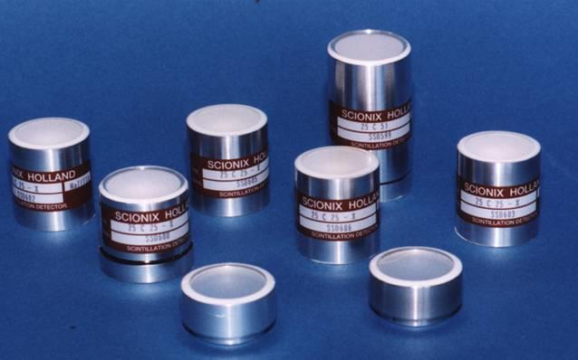
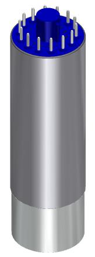
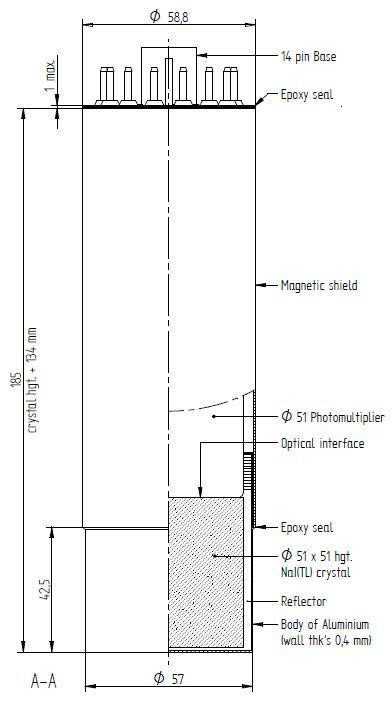
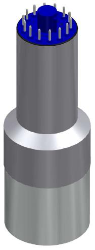
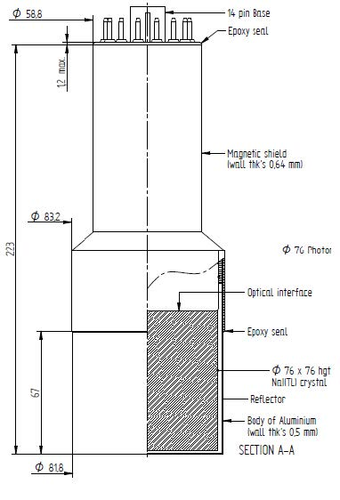
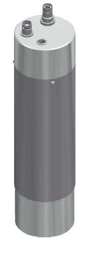

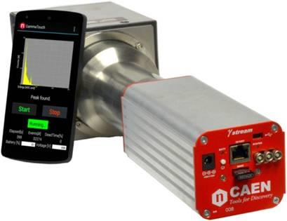
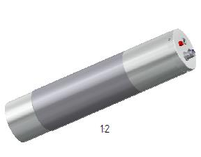
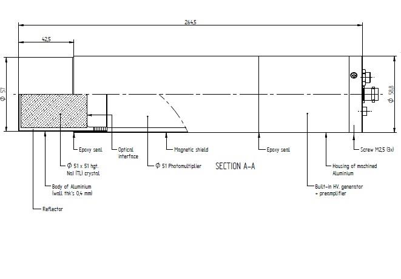
The classical scintillation detector. The crystal is mounted directly to the entrance window of a PMT, with optical grease or optical cement providing index-matched coupling. The PMT and the crystal share a single sealed housing, with the photocathode protected from ambient light by the PMT's own envelope and by the housing walls.
Configuration choices within the PMT-coupled family:
PMT-coupled assemblies remain the dominant configuration for large-volume gamma detectors (above 3 inches in any dimension), for low-background counters where intrinsic photodetector activity must be controlled, and for high-rate timing applications where PMT TTS still wins.

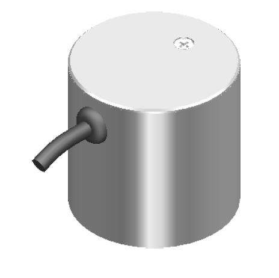
The crystal is optically coupled to a silicon photodiode rather than a PMT. The photodiode is much smaller than a PMT photocathode, so photodiode-coupled designs work best with crystals that emit at long wavelengths (CsI(Tl), GAGG:Ce) where the photodiode QE is high.
The signal level out of a photodiode-coupled scintillator is much smaller than out of a PMT-coupled scintillator (no internal multiplication), so a low-noise charge-sensitive preamplifier is mounted directly on the photodiode within the housing. The preamplifier's input-referred noise sets the system's noise floor. Photodiode-coupled detectors are used in applications where the high-light-yield emission and the absence of HV requirement matter: CT scanner arrays, some industrial gauges, certain compact gamma cameras.

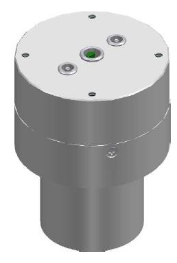
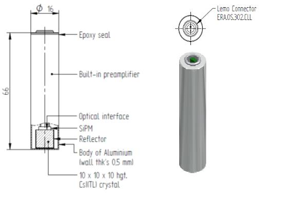
The dominant new configuration for compact and handheld instruments. The crystal is optically coupled to one or more SiPM dies tiled across the crystal face. The SiPM produces a signal comparable in size to a PMT (10^5 to 10^6 internal gain), with much smaller form factor, no high-voltage requirement, magnetic-field tolerance, and direct CMOS integration of the readout electronics.
Within the SiPM-coupled family, the design questions are:
Modern SiPM-coupled detectors achieve 6 to 7 percent FWHM at 662 keV with optimized CsI(Tl) crystals of 1 inch by 1 inch dimension, comparable to the best PMT-coupled NaI(Tl) detectors of the same volume. The form factor advantage is dramatic: a SiPM-coupled assembly fits in a fraction of the volume of a PMT-coupled equivalent.
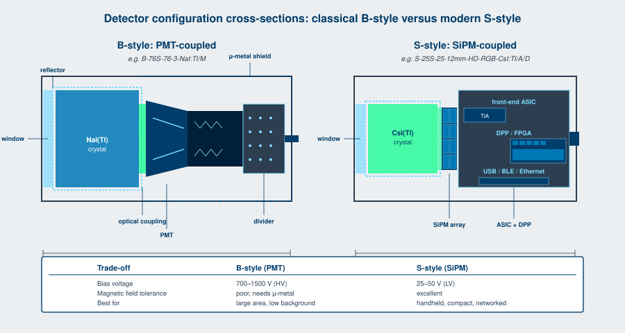
The entrance window separates the radiation from the scintillator and lets the radiation through with minimal absorption. The choice of window material depends on the radiation type and energy.
Aluminum is the standard for gamma and high-energy beta. Thicknesses from 0.5 mm to 5 mm depending on the energy range and the desired ruggedness. Aluminum effectively eliminates ambient light contamination and provides mechanical protection.
Beryllium is used for low-energy X-ray detection (below about 10 keV), where aluminum's photoelectric absorption would be unacceptable. Beryllium has the lowest photoelectric absorption of any reasonable window material, with a Z of 4 and density of 1.85 g/cc.
Aluminized mylar is used for alpha and beta detection where minimal absorption matters and the detector does not need to survive mechanical abuse. Thicknesses from 2 to 100 micrometers. The 2-micron versions are not 100 percent light-tight and may need ambient-light shielding.
Glass or quartz is the standard for the photodetector-side window of the housing. Glass for visible-light scintillators. Quartz for UV scintillators (BaF2 fast component, undoped CsI). Borosilicate glass cuts off below 300 nm; quartz transmits to 180 nm.
Optical coupling between the crystal and the window or the photodetector is silicone-based grease (refractive index 1.4 to 1.5) for routine work, optical cement for permanent bonds, or air gap where the loss is tolerable. Index-matched coupling reduces Fresnel reflection from each interface from 4 to 5 percent down to less than 1 percent.

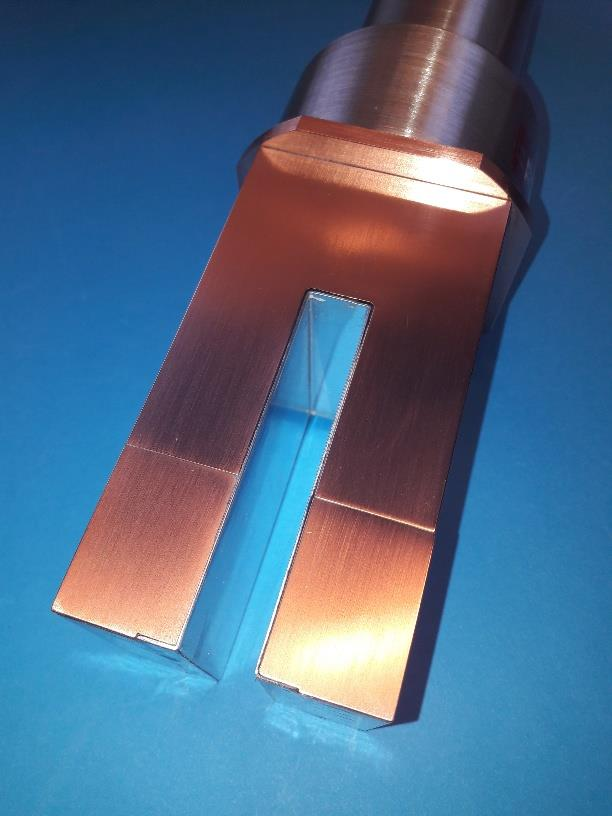
For gamma spectroscopy, crystal volume scales detection efficiency. Common standard sizes:
Cylindrical is the most common geometry. Rectangular slabs are used in arrays. Wells are used for sample counting at near 4-pi solid angle. Custom geometries (annular, hemispherical, segmented) are made on order.
Housing materials are chosen for cost, ruggedness, and intrinsic radioactivity. Stainless steel is standard for harsh environments. Aluminum is standard for general purpose. Titanium is specialty for low background and weight-sensitive applications. Copper is used in low-background counters where the gamma background of standard housing materials would be problematic.
A light pulser is a small built-in light source mounted inside the detector housing, used for stability monitoring and gain calibration. Two types are common.
LED pulsers. A pulsed LED, controlled by an external trigger or by the detector's onboard electronics, injects a known light pulse into the photodetector. The resulting electrical pulse provides a reference for gain calibration that is independent of the scintillator's response. LED pulsers are useful for monitoring photodetector drift and for confirming the detector is alive when no radiation source is available.
Alpha pulsers. A small Am-241 source (typically 100 to 500 nanocuries activity) is mounted inside the housing such that its alpha emissions reach the scintillator but its low-energy gamma is absorbed. The alpha-induced scintillation produces a peak at gamma-equivalent energy of 1.5 to 3.5 MeV in NaI(Tl). The peak position is monitored continuously and used as a real-time gain reference. Alpha pulsers are the standard solution for spectrum stabilization in deployed instruments where temperature drift and PMT hysteresis must be corrected.
The Am-241 alpha pulser is referred to as an "Am-pulser" throughout the literature and in this book. It is one of the simplest and most reliable spectrum-stabilization techniques and should be specified by default for any deployed instrument that needs gain stability over hours or days.

Low-background detectors are configurations engineered to minimize the detector's intrinsic radioactivity, so that very low external activities can be measured without being swamped by the detector's own background. Applications include environmental monitoring, food and water radioactivity testing, medical sample counting, and rare-event physics experiments.
The dominant background sources in a standard scintillation detector:
Low-background designs address each of these:
A well-engineered low-background NaI(Tl) detector, 3 inches by 3 inches in copper-lined shielding, achieves a background count rate two to three orders of magnitude below an unshielded standard detector at the same volume.
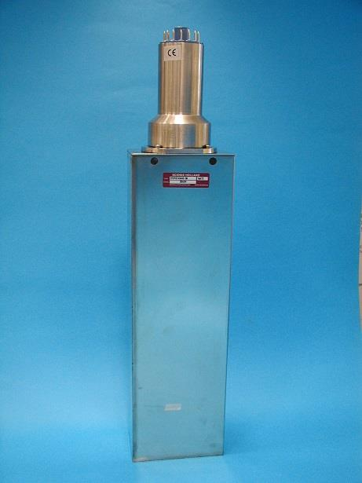
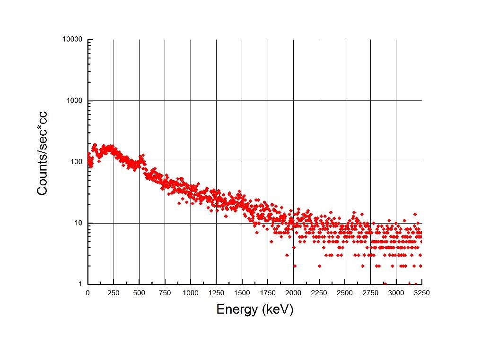
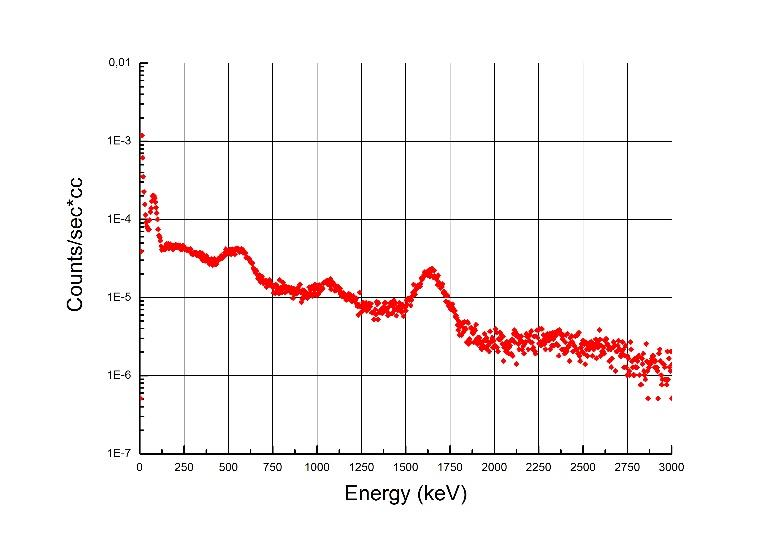
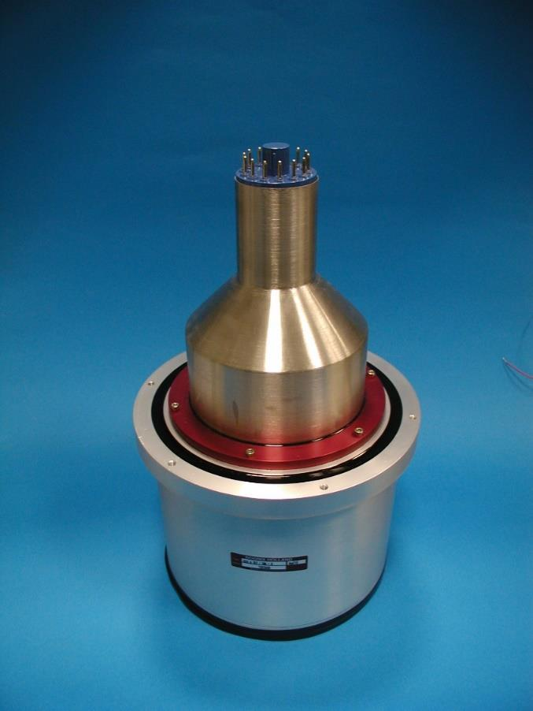


For field deployment, the standard catalog detector is augmented with mechanical and environmental protection.
Down-hole tools package the detector in a sealed pressure housing rated to 20,000 psi or more, with shock-mounting between the detector and the housing wall. The PMT or SiPM is rated for the operating temperature (175 C is typical). The crystal is selected for the temperature regime. The housing is typically stainless steel.
MIL-spec drop-tested housings are used for handheld instruments expected to survive drops onto hard surfaces, exposure to dust and rain, and temperature cycling from -40 C to +60 C. Shock mounts for the crystal and the photodetector are integrated into the housing design.
Vacuum-rated housings for space applications eliminate any organic outgassing material from the detector volume. Optical coupling uses cured silicone rather than grease. The housing is hermetically sealed and pressure-tested.
Submersible housings for underwater monitoring use double-O-ring seals and corrosion-resistant materials (titanium or specialized stainless steel). Cable penetrators are pressure-rated.
Going Deeper - Light extraction efficiency in a sealed assembly
The fraction of scintillation photons that reach the photodetector face is the light extraction efficiency. It depends on the crystal refractive index n_c, the refractive index of the optical coupling n_g, the photodetector window refractive index n_w, the surface finish of the crystal, the choice of reflector, and the geometry of the housing.
For a CsI(Tl) crystal (n_c = 1.79) coupled with silicone optical grease (n_g = 1.45) to a glass window (n_w = 1.5) on a PMT, the Fresnel reflection at each interface is 1 to 2 percent if index-matching is good. The total optical loss in the coupling stack is therefore 3 to 6 percent, leaving roughly 94 to 97 percent of light incident on the window to reach the photocathode (or photodiode). The light extraction from the crystal interior to the window face is set by surface finish, reflector quality, and geometry; for a 1 inch by 1 inch crystal with PTFE diffuse reflector, the typical light collection efficiency at the window is 80 to 90 percent. Multiplying gives 75 to 85 percent of scintillation photons reaching the photodetector face. Each percent point matters at low energy where photon statistics dominates resolution.
BNC in Practice - Configuration drift over the lifetime of a product
A standard catalog detector configuration is rarely the same product five years apart. PMT vendors update their catalogs and discontinue older tube types. SiPM vendors release new generations every two to three years with improved PDE. Reflector materials, optical coupling compounds, and housing fabrication techniques evolve. The configuration code (Chapter 10 nomenclature) stays the same; the product behind it improves. The applications engineer who specifies a detector against an old datasheet and the manufacturing engineer who builds it with current components both expect the calibration certificate to reflect the as-built performance, not the catalog-page promise. Periodic re-qualification of standard configurations is part of running a serious detector business.
A scintillator material is not a product. A configuration is a product. The configuration carries the engineering trade-offs, the manufacturing knowledge, the calibration history, and the failure modes that make a detector usable in a specific application. The next chapter walks through specific named configurations from the Scionix catalog as worked examples of how the choices in this chapter combine in practice.
Take it interactively. The quiz lives on its own page. Pick one answer per question, then check your score. Auto-scored, and your answers are saved on this device. About 10 minutes.
Or read the questions and answers inline below (preserved for print and offline use).
[1] G. F. Knoll, Radiation Detection and Measurement, 4th ed. Hoboken, NJ: Wiley, 2010.
[2] Scionix Holland B.V., "Scintillation Detector Catalog," updated 2025.
[3] H. T. van Dam et al., "SiPM array readout of CsI(Tl) for compact gamma spectroscopy," in Proc. SCINT 2022, Santa Fe, 2022.
[4] J. Heffner et al., "Low-background gamma spectroscopy systems for environmental monitoring,"